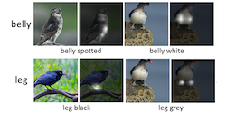
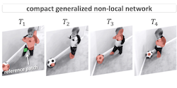
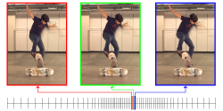
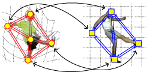
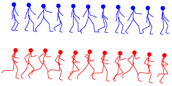

Conferences
- Improving Crowded Object Detection via Copy-PasteAAAI Conference on Artificial Intelligence (AAAI), 2023
J. Deng, D. Fan, X. Qiu and F. Zhou[Paper] [Chinese Wiki] - Spotlight
- Oral
- Oral
- Learning Meta Model for Zero- and Few-shot Face Anti-spoofingAAAI Conference on Artificial Intelligence (AAAI), 2020
Y. Qin, C. Zhao, X. Zhu, Z. Wang, Z. Yu, T. Fu, F. Zhou, J. Shi and Z. Lei[Paper] - 
- 
- Oral
- Kernel Pooling for Convolutional Neural NetworksIEEE Conference on Computer Vision and Pattern Recognition (CVPR), 2017
Y. Cui, F. Zhou, J. Wang, X. Liu, Y. Lin and S. Belongie[Paper 1MB] - Deep Deformation Network for Object Landmark Localization[Paper 7MB]

- Fine-grained Categorization and Dataset Bootstrapping using Deep Metric Learning with Humans in the LoopIEEE Conference on Computer Vision and Pattern Recognition (CVPR), 2016
Y. Cui, F. Zhou, Y. Lin and S. Belongie[Paper 3MB] - 

- Deformable Graph MatchingIEEE Conference on Computer Vision and Pattern Recognition (CVPR), 2013
F. Zhou and F. De la Torre - Unsupervised Temporal Commonality Discovery
- Generalized Time Warping for Multi-modal Alignment of Human MotionIEEE Conference on Computer Vision and Pattern Recognition (CVPR), 2012
F. Zhou and F. De la Torre - Unsupervised Summarization of Rushes VideosACM International Conference on Multimedia (ACM MM), 2010
Y. Liu, F. Zhou, W. Liu, F. De la Torre and Y. Liu[Paper 8MB] - OralUnsupervised Discovery of Facial EventsIEEE Conference on Computer Vision and Pattern Recognition (CVPR), 2010
F. Zhou, F. De la Torre and J. F. Cohn - Detecting Depression from Facial Actions and Vocal ProsodyInternational Conference on Affective Computing and Intelligent Interaction (ACII), 2009
J. F. Cohn, T. Simon, I. Matthews, Y. Yang, M. H. Nguyen, M. Tejera, F. Zhou and F. De la Torre[Paper 1MB] - Canonical Time Warping for Alignment of Human BehaviorAdvances in Neural Information Processing Systems (NIPS), 2009
F. Zhou and F. De la Torre  Aligned Cluster Analysis for Temporal Segmentation of Human MotionInternational Conference on Automatic Face and Gesture Recognition (FG), 2008
Aligned Cluster Analysis for Temporal Segmentation of Human MotionInternational Conference on Automatic Face and Gesture Recognition (FG), 2008
F. Zhou, F. De la Torre and J. K. Hodgins
Journals
- Spatio-temporal Matching for Human Pose Estimation in VideoIEEE Transactions on Pattern Analysis and Machine Intelligence (PAMI), 38(8):1492-1504, 2016
F. Zhou and F. De la Torre - Factorized Graph MatchingIEEE Transactions on Pattern Analysis and Machine Intelligence (PAMI), 38(9):1774-1789, 2016
F. Zhou and F. De la Torre - Generalized Canonical Time WarpingIEEE Transactions on Pattern Analysis and Machine Intelligence (PAMI), 38(2):279-294, 2016
F. Zhou and F. De la Torre - Hierarchical Aligned Cluster Analysis for Temporal Clustering of Human MotionIEEE Transactions on Pattern Analysis and Machine Intelligence (PAMI), 35(3):582-596, 2013
F. Zhou, F. De la Torre and J. K. Hodgins
Technical Report
- A Refined 3D Pose Dataset for Fine-Grained Object CategoriesInternational Conference on Computer Vision Workshop (ICCVW), 2019
Y. Wang, X. Tan, Y. Yang, X. Liu, E. Ding, F. Zhou and L. Davis[Paper] [Code & Dataset]